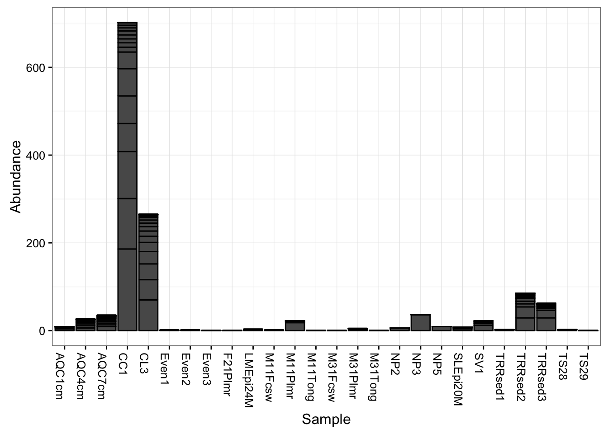
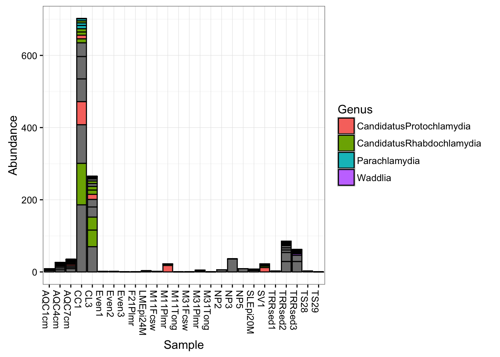
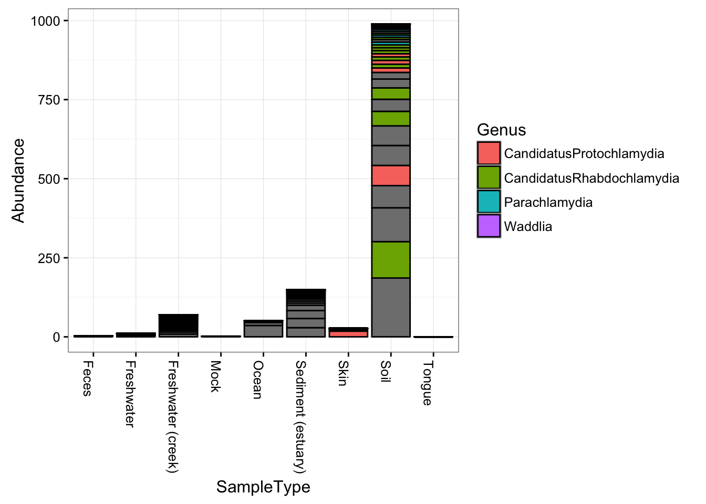
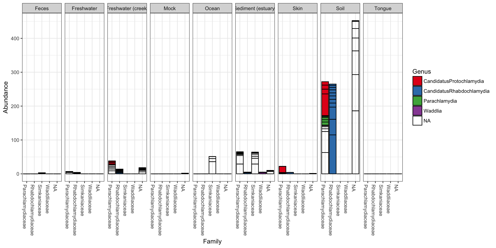
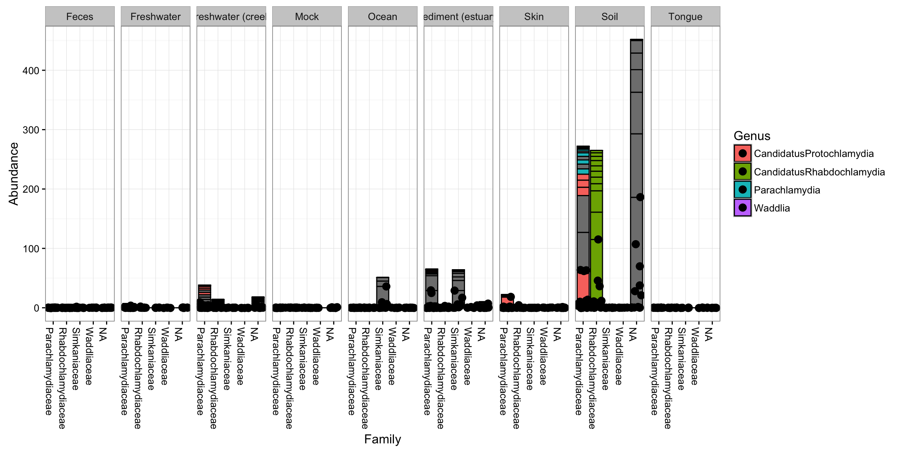
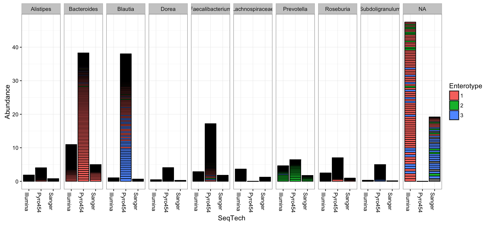
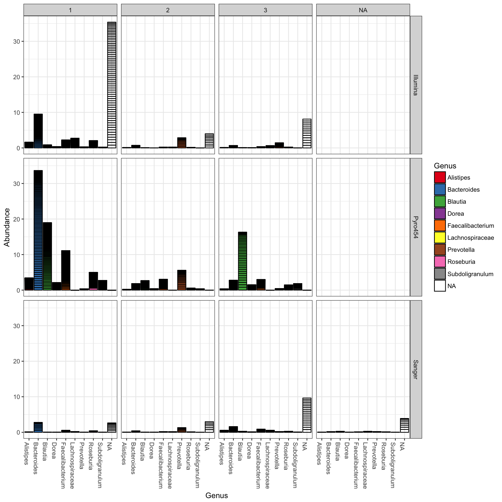

Powerful, flexible phyloseq bar plots
Mon Mar 12 15:07:01 2018
The following are examples to help get you started using the plot_bar function on your own phyloseq data.
Global Patterns dataset examples
Load the dataset, and trim to just the Chlamydiae phylum.
library("phyloseq"); packageVersion("phyloseq")## [1] '1.22.3'library("ggplot2"); packageVersion("ggplot2")## [1] '2.2.1'ggplot2 package theme set. See the ggplot2 online documentation for further help.
theme_set(theme_bw())Load dataset
data("GlobalPatterns")
gp.ch = subset_taxa(GlobalPatterns, Phylum == "Chlamydiae")Some initial basic plots
The following is the default barplot when no parameters are given. The dataset is plotted with every sample mapped individually to the horizontal (x) axis, and abundance values mapped to the veritcal (y) axis. At each sample’s horizontal position, the abundance values for each OTU are stacked in order from greatest to least, separate by a thin horizontal line. As long as the parameters you choose to separate the data result in more than one OTU abundance value at the respective position in the plot, the values will be stacked in order as a means of displaying both the sum total value while still representing the individual OTU abundances.
plot_bar(gp.ch)
Add fill color to represent the Genus to which each OTU belongs.
plot_bar(gp.ch, fill="Genus")
Now keep the same fill color, and group the samples together by the SampleType variable; essentially, the environment from which the sample was taken and sequenced.
plot_bar(gp.ch, x="SampleType", fill="Genus") Note that abundance values for the same OTU from the same SampleType will be stacked as separate bar segments, and so the segment lines may not accurately portray the observed richness (because the same OTU might be shown more than once for the same horizontal axis grouping). However, all other aspects of the representation are quantitative, with the total stacked bar height at each horizontal position indicating the sum of all reads for that sample(s). There is not attempt by plot_bar to normalize or standardize your data, which is your job to do (using other tools in the phyloseq pacakge, for instance) before attempting to interpret/compare these values between samples.
More Sophisticated Organization using Facets
In the following example we elected to further organize the data using “facets” – separate, adjacent sub-plots. In this case the facets allow us to according to the genus of each OTU. Within each genus facet, the data is further separated by sequencing technology, and the enterotype label for the sample from which each OTU originated is indicated by fill color.
plot_bar(gp.ch, "Family", fill="Genus", facet_grid=~SampleType)
Further customization using ggplot2 layers
Note that additional customizations of the plot are always possible using standard ggplot2 layers. For example, the following code chunk shows a plot with jittered points add using a second plot layer.
library("ggplot2")
p = plot_bar(gp.ch, "Family", fill="Genus", facet_grid=~SampleType)
p + geom_point(aes(x=Family, y=Abundance), color="black", position="jitter", size=3)
Enterotypes dataset examples
First, load package (if you haven’t already), then trim Enterotype data to most abundant 10 genera.
library("phyloseq")
data("enterotype")
TopNOTUs <- names(sort(taxa_sums(enterotype), TRUE)[1:10])
ent10 <- prune_species(TopNOTUs, enterotype)## Warning: 'prune_species' is deprecated.
## Use 'prune_taxa' instead.
## See help("Deprecated") and help("phyloseq-deprecated").The parameters to plot_bar in the following code-chunk were chosen after various trials. We suggest that you also try different parameter settings while you’re exploring different features of the data. In addition to the variables names of sample_data, the plot_bar function recognizes the names of taxonomic ranks, if present. In this example we have also elected to organize data by “facets” (separate, adjacent sub-plots) according to the genus of each OTU. Within each genus facet, the data is further separated by sequencing technology, and the enterotype label for the sample from which each OTU originated is indicated by fill color. Abundance values from different samples and OTUs but having the same variables mapped to the horizontal (x) axis are sorted and stacked, with thin horizontal lines designating the boundaries. With this display it is very clear that the choice of sequencing technology had a large effect on which genera were detected, as well as the fraction of OTUs that were assigned to a Genus.
plot_bar(ent10, "SeqTech", fill="Enterotype", facet_grid=~Genus)
You could nix the approach in which OTU abundance values from different samples, different enterotypes, are stacked together and simply shaded differently, and instead opt to separate both the enterotype designation of the samples and the genus designation of the OTUs into one grid. Only a slight modification to the previous function call is necessary in that case (with an added fill to make it even easier to read):
plot_bar(ent10, "Genus", fill="Genus", facet_grid=SeqTech~Enterotype)
Add ggplot2 layer to remove the OTU separation lines
The following example uses more ggplot2-package commands directly for customization, so you need to load the package first (which we did earlier, but I will show it again here for modularity).
library("ggplot2")Now you can save the previous plot as a variable, let’s call it p, and then add additional ggplot2 layering instructions that will, in effect, remove the dividing lines that separate OTUs from one another in the previous plot.
p = plot_bar(ent10, "Genus", fill="Genus", facet_grid=SeqTech~Enterotype)
p + geom_bar(aes(color=Genus, fill=Genus), stat="identity", position="stack")